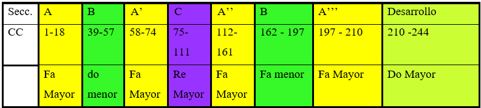
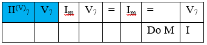
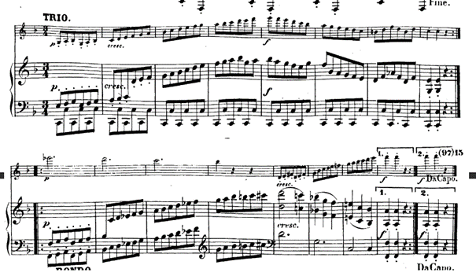
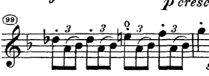
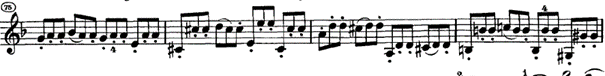
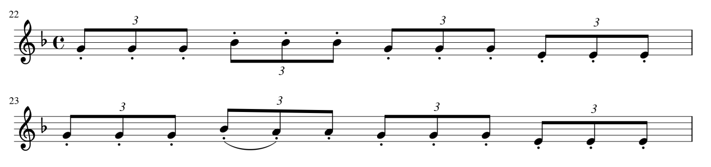

Introducción
La sonata Op.24 nº 5 para violín y piano de Beethoven fue compuesta en el año 1801, período de transición para el compositor. Es una obra de marcado carácter melódico en el que el violín juega un papel igual de importante que el piano. Además de la extensión de la forma clásica tanto en movimientos, como en la extensión de los desarrollos, también juega con recursos técnicos como el spiccato. Esta sonata forma parte del repertorio de violín para grado superior.
El trabajo se organiza en cuatro bloques, el primero de contexto histórico social, estilístico así como una breve reseña de los períodos del compositor, el segundo bloque describe el contexto técnico-interpretativo de la obra y el tercer bloque lo dedicamos al análisis de la misma. Este último bloque contempla un análisis formal, armónico e interpretativo y también analiza algunas versiones de referencia así como compara algunas de las distintas ediciones a las que tenemos acceso.
Reseña biográfica
Ludwig van Beethoven nació en Bonn en 1770 y falleció en Viena en 1827. El compositor alemán representa la transición entre la época clásica y el Romanticismo. Considerado como un modelo de personaje romántico comprometido con todas las cuestiones de su tiempo. Wilhelm von Lenz (Lenz, 1852) estructuró su obra en tres estilos: 1. Periodo temprano (1795-1800): en este primer período Beethoven asimila las características del clasicismo en sus composiciones, sin embargo introduce algunas modificaciones, como por ejemplo la ampliación del número de movimientos en la sonata. la sustitución del minueto por el scherzo o el empleo de los modos menores. 2. Periodo medio o heroico (hasta 1815): los acontecimientos personales que ocurrieron durante esta etapa de su vida se plasmaron en sus composiciones. Su creciente sordera que derivaría irremediablemente en una crisis personal. En este sentido, en sus composiciones se percibe una actitud de lucha y rebelión ante un destino adverso. Algunos especialistas (Ruiza, Fernández, & Tamaro, 2004) señalan la Sinfonía nº 3 y la Sinfonía nº 5 como sus obras cumbre de esta segunda etapa. En lo que se refiere a las innovaciones de sus composiciones en este ciclo, podemos mencionar la reformulación de la estructura clásica de la sinfonía y en cuanto a las formas, la sustitución del minueto por el scherzo. La vehemencia característica de este periodo se condensa en obras como: los tres Cuartetos «Rasumovsky» op. 59, la Sonata, Op.30 nº 2 en do menor, las oberturas de Coriolano y Egmont, la Sonata para piano, Op.53 (Aurora), la Sonata a Kreutzer para violín y piano, la tercera Sonata para violoncelo, Op.69, los Tríos, Op.70, la Sonata para piano, Op.57 (Appassionata), y la ópera Fidelio. 3. Periodo tardío (hasta 1827): esta última etapa es considerada la más compleja, en ella experimenta con un estilo nuevo más dramático. Este ciclo está impregnado por un espíritu universalista de fraternidad y solidaridad. Muy importante en este periodo son las Sinfonías nº 7ª hasta la 9ª.
Contexto histórico
El periodo histórico que nos ocupa es finales del siglo XVIII y comienzos del XIX. Estuvo marcado por acontecimientos de gran importancia para la humanidad como lo fueron la Ilustración, el despotismo ilustrado, el crecimiento económico y las revoluciones sociales de finales del siglo XVIII, y las innovaciones tecnológicas de comienzos de siglo XIX como la máquina de vapor, el ferrocarril y el motor de gasolina (Wolfgang J. Mommsen, 1971).
En la primera mitad del siglo XVIII la base económica de Europa se centraba en el sector agrícola y la sociedad aún se organizaba en estamentos, sin embargo, durante el transcurso de este siglo estas condiciones fueron evolucionando. A nivel político los países europeos estaban sometidos a monarquías absolutistas, propias del sistema de gobierno del Antiguo Régimen.
También, en el siglo XVIII se empieza a considerar el estudio científico del hombre y de la sociedad, gestándose el movimiento intelectual y cultural conocido como la Ilustración. La Ilustración es el resultado de la Revolución Científica que se produjo en los siglos XVI y XVII y que alcanzó su máximo esplendor con las teorías de Newton.
Asimismo, la razón se establece como principio básico de las normas jurídicas y del concepto de estado ideal. El pensamiento ilustrado supuso una reforma de los cimientos de la sociedad y de su organización, afectando incluso a los monarcas que aunque seguían gobernando de forma absoluta estaban en consonancia con los principios de la Ilustración. Esta nueva corriente de pensamiento provocó rebeliones sociales en estados como Francia, donde se produjo la Revolución Francesa de 1789 que desembocó en el final del Antiguo Régimen.
Durante el siglo XIX, las ideas políticas introducidas en el siglo anterior asientan las bases de las revoluciones burguesas. El sufragio universal busca la alianza con el movimiento obrero, el imperialismo se extiende por el mundo (entre otros países, en Rusia). Las principales corrientes de pensamiento son el idealismo absoluto (Hegel), el materialismo dialéctico (Marx y Engels), el positivismo (en el que se afirma que el único conocimiento válido es el conocimiento científico) y el nihilismo (como rechazo a todos los principios religiosos y morales).
Contexto estilístico
Las principales características del siglo XIX son (Sadie & Latham, 1994):
- Cambio absoluto de la música en relación con el patrocinio, mecenazgo y el público: la burguesía será quien delimite los gustos ya que son los que asisten a los conciertos.
- Incremento de la música en el hogar: Aparece la industria de los instrumentos musicales en serie y ediciones musicales (partituras adaptadas para piano), se multiplican los estudios pedagógicos.
Aparece una nueva visión del músico que se desarrolla durante el siglo XIX. En este contexto, la música ha tenido un papel fundamental en la jerarquización de las Artes. La música se considera como Arte principal porque no está supeditado a la realidad: es abstracto y puede conseguir la finalidad de las Artes que es la expresión del sentimiento.
Además aparece una corriente historicista en la música marcada por el positivismo1 que consiste en la recopilación de datos para la reconstrucción de grandes periodos históricos.
Relación música y literatura
Este siglo trae una nueva visión del músico y de su trabajo. El pensamiento de Hegel2 define las Artes de manera que abre las puertas a la estética por una parte del contenido y por otra la forma como plasmación de una idea espiritual que adquiere vitalidad cuando se la interpreta. La corriente formalista tiene en Hegel a su primer exponente y se contrapone al idealismo romántico. Estas ideas influenciarán a posteriores generaciones durante el s. XX. Como hemos estudiado en la asignatura, Hegel define tres estadios en el Arte:
- Simbólico: representado por la arquitectura.
- Clásico: en el que se encuentra la escultura.
- Romántico: En el que se encuentra la música, la pintura y la poesía.
Hegel defiende que el elemento más característico de la música es su interioridad, ya que carece que semántica.
Características musicales
Se utilizan las mismas formas musicales pero con una particularidad: ahora las formas y el discurso musical se deforman. Lo más importante es el contenido. Si la sonata era un discurso perfectamente organizado en partes, temas,…etc. Ahora la importancia la tiene el desarrollo de los temas. Podemos encontrar ejemplos en la música de Beethoven en la que hay desarrollos en las partes de la exposición. Esto incrementa la tensión. Los esquemas se respetan, pero muy forzados para ampliar las posibilidades expresivas. Entre las características más importantes, podemos destacar las siguientes:
- Utilización de tiempos extremos con cambios rítmicos constantes.
- Enriquecimiento del timbre: las orquestas románticas incrementan el número de músicos e instrumentos, dando lugar a la creación de la orquesta sinfónica.
Contexto técnico-interpretativo
Sabemos que Beethoven no tuvo formación pianística, sino organística, puede que ello propiciara su concepción del legato en el pianoforte. El pianoforte sufrió una gran evolución como instrumento, siendo Beethoven testigo de esta evolución (Sánchez, 2016). Los primeros pianofortes tenían una sonoridad ligera y no tenían grandes capacidades para el legato. Durante los años 1773 hasta 1817 Beethoven tuvo acceso a diferentes modelos y evoluciones del piano, sabemos que el piano no tenía estándares en cuanto a tesitura (entre 5 octavas y media y seis octavas) ni en cuanto a la función de los pedales ni en cuanto al tacto del teclado.
Por otro lado, el violín ha sufrido una serie de cambios, aunque estructuralmente se trata del mismo instrumento, hay reglajes que se han modificado buscando, sobre todo la potencia sonora y la posibilidad de tocar sonidos más extremos.
Las grandes diferencias entre un violín en la época de Beethoven y un violín moderno son: El ángulo del mango (búsqueda de facilidad en posiciones altas), la enorme evolución en cuanto a las cuerdas (de tripa con entorchado metálico en lugar de sintéticas) y el arco (similar al actual, aunque con menor curvatura), quizás la mayor diferencia con respecto al arco moderno resida en la capacidad de golpes saltados, más limitada en el arco de la época.
Contexto específico de la obra
Según (Bar-elli, 2001; Itigan & Gragulin, 2016; Kramer, 2005) las sonatas para violín y piano han sido relegadas a un segundo plano por el resto de obra monumental de Beethoven. Podemos distinguir una evolución a lo largo de las diez sonatas para violín y piano. Las primeras, de corte clásico en el que el violín tiene un papel secundario; la sonata Op.24, compuesta en 1801, se encuentra en el cambio de período del compositor, y en concreto, ésta es la primera sonata en la que el violín introduce el tema, relegando el piano al acompañamiento del mismo. Según los estudios que hemos encontrado, esta composición equilibra el papel de ambos instrumentos y se centra en la melodía, alejándose de la sonata anterior Op.23 compuesta en la tonalidad de la menor. Los movimientos también son peculiares, con la introducción de un scherzo de breve duración (alrededor de un minuto) que enlaza con el rondó final.
Análisis de la obra
Análisis formal general
El primer movimiento (Allegro) en Fa mayor, tiene forma sonata bitemática tripartita, con la particularidad que no hay repetición del desarrollo, únicamente de la exposición. Cabe mencionar la longitud de la coda final, que comienza de la misma manera que el desarrollo, con un acorde de Re Mayor. En la siguiente sección, veremos con más detalle los elementos de este movimiento.
El segundo movimiento en Si b M tiene forma de rondó con un pequeño desarrollo ABA’CD. La estructura es la siguiente:
El tercer movimiento Scherzo en Fa Mayor tiene forma tripartita ABA.
El cuarto movimiento es un rondó-sonata en Fa Mayor, en este caso la forma tradicional ABACABA está extendida (se añade un desarrollo).

Análisis tonal, armónico y melódico
Vamos a realizar el análisis armónico por movimientos y por secciones de la obra.
Primer movimiento
El primer movimiento, el tema A, la primera frase está compuesta por tres motivos, en formato 2 + 4 + 4 que señalamos a continuación:
La primera semifrase está caracterizada por la blanca y las semicorcheas en el tercer y cuarto tiempo y la estabilidad armónica de la tónica, es respondida por la segunda semifrase, de 4 compases, la tensión armónica aumenta, terminando en una dominante que continúa en la siguiente semifrase. Esta se extiende en una siguiente semifrase de otros 4 compases y finaliza en tónica.
La siguiente frase, es idéntica a la primera solo que en este caso, es el piano el que expone la melodía mientras el violín realiza el acompañamiento. Es esquema armónico es similar al anterior, solo que ahora la frase no termina en una cadencia perfecta, el final de la tercera semifrase se omite (compás 20), añadiéndose una nueva semifrase que pivota sobre la dominante, para terminar estableciendo el tono de Do mayor en el compás 25:

Sin embargo, la tonalidad no se establece en Do mayor, si no que se introduce la tonalidad de La b Mayor (tonicalización) en el compás 26. Esta sección es inestable armónicamente y modula hacia Sol Mayor y finalmente a Do Mayor, la tonalidad del tema B.
Tras una breve introducción a Do mayor usando la dominante, el tema B comienza introducido por el violín. Es un tema contrastante con lo melódico del tema A, tanto por matices, con constantes cambios del piano al forte súbito usando también sforzandos. La frase inicial, b1 de melodía sincopada de ocho compases juega con los cambios modo mayor y menor.
La siguiente frase b2 (4+4), es un diálogo imitativo del violín con el piano, utilizando las repeticiones constantes sobre el tema inicial como motivo.
La frase b3 (4+4+6) está basada en el tema b1, solo que esta vez con el piano exponiendo la melodía y el violín realizando el acompañamiento. Esta frase encaja con la sección bcad que concluye el tema B y comienza el desarrollo.
El desarrollo comienza con una sorprendente dominante de Re Mayor, que se mantiene hasta que aparece el motivo del tema B en el piano, mientras el violín lo acompaña con las corcheas.
El motivo, del comienzo del tema B (en rojo), aparece dos veces en el piano, pero es la cola del motivo (en azul), en escalas a octavas en el piano, lo que da comienzo a la sección d2 (compás 98) del desarrollo. Aquí, se suma el transporte de la cola del motivo B, que se alterna en un diálogo entre el violín y el piano con un nuevo elemento que son los tresillos.
Esta sección, la más larga, pasa por varias regiones, siempre debido al transporte del motivo:
| Sib Mayor | sib menor | fa menor | do menor | sol menor | re menor | La Mayor |
|---|---|---|---|---|---|---|
| 90- 94 | 94-100 | 100-106 | 106-110 | 110-112 | 112-116 | 116 |
El desarrollo finaliza con una serie de 8 compases que comienzan en La Mayor, pero en los que la tonalidad se diluye ya que los últimos 4 compases son un unísono de semicorcheas en el violín y en el piano.
La reexposición presenta algunos cambios, el primero es que es ahora el piano el que expone el tema A, y también el que expone el tema B, a diferencia de la exposición. Como es habitual en la reexposición, el tema B está transportado en la tonalidad inicial de Fa Mayor. En este caso, la coda del movimiento tiene su propio desarrollo, podríamos decir que es un ejemplo de desarrollo codal. De hecho, se pueden distinguir tres secciones dentro de este desarrollo codal: dc1 está basado en el motivo de bcad, dc2 está basado en el comienzo del desarrollo y dc3 está basado en la cabeza del tema A. A continuación mostramos cada una de estas secciones.
Segundo movimiento: Adagio molto expressivo
En este caso, el piano introduce el tema A (4+4 compases), mientras que el violín acompaña siempre las partes débiles del compás. La frase se repite de nuevo ahora exponiendo el tema principal en el violín.

La sección B, está formada por motivos, y da sensación de transición e inestabilidad armónica.
Esta sección da lugar a una variación de la sección A, en la que el tema se adorna más y que tiene la peculiaridad de estar expuesto en la tonalidad menor en el violín.
El episodio C (4+4) comienza en el compás 46 con una hacia Re Mayor. En esta sección, el piano sigue con su acompañamiento de semicorcheas ligadas, mientras el violín tiene notas tenidas
Este episodio termina en un pequeño desarrollo codal D (c. 54), utilizando el comienzo del motivo de A, también recupera la tonalidad inicial de Si bemol mayor. Tiene dos frases similares en las que primero el piano expone el tema mientras el violín acompaña con semicorcheas (por primera vez en el movimiento) y luego el violín retoma el tema inicial.
Tras estas dos frases, comienza una pedal de dominante y una cadencia perfecta.
Tercer movimiento: Scherzo: Allegro molto
Es el movimiento más corto y con carácter más contrastante de la sonata, todas las notas están picadas Este movimiento recupera la tonalidad inicial de Fa Mayor, la primera sección es un período de 16 compases formado por dos frases de 8 compases. La primera frase el piano introduce el tema y en la segunda frase tanto el violín como el piano comienzan el tema juntos, pero al segundo compás se desfasan una negra, de modo que la frase se convierte en una pregunta-respuesta entre el violín y el piano. La segunda parte de esta sección, tras la doble barra de repetición, está basada en el ritmo del inicio y en el motivo m1 introducido por el violín y extendido en la segunda casilla de repetición.
El trío tiene dos secciones que se repiten, la primera sección está en la dominante, es un pedal de do en la mano izquierda del piano, mientras que la mano derecha y el violín tocan a unísono una escala ascendente y descendente. En la segunda parte, tras la barra de repetición, el violín introduce unas notas tenidas mientras el piano sigue con su carrera de corcheas. El violín se incorpora a esta escala ascendente en corcheas para terminar al unísono son el piano.

Cuarto movimiento: Rondó: Allegro ma non troppo
Este movimiento regresa a la tonalidad de Fa Mayor, está basado en dos motivos (m1 y m2) que se exponen en la frase inicial del movimiento. La primera sección A, está formada por un período con dos frases de 8 y 10 compases, en la primera el piano solo expone el tema y en la segunda, el violín acompañado por el piano expone y extiende el tema. Como vemos se trata de una sección armónicamente muy estable con un ritmo armónico muy lento y de carácter melódico.
Dentro de A podemos distinguir una sección a2 basada en el motivo m2, se expone cuatro veces, primero en el violín y luego en el piano, usando una variación con tresillos la segunda vez, además, es característico el uso de sforzandos en los tiempos débiles de la segunda repetición. Esta sección sirve de transición hacia B.
La sección B, se encuentra en la región de do menor/mayor. Las frases tienen la peculiaridad de usar do menor para el antecedente y Do mayor para el consecuente. La segunda frase se extiende con un pedal de Do en el violín para hacer una modulación hacia Fa Mayor y llegar de nuevo a otro episodio A’.
El episodio A’ es bastante corto, expone dos veces el tema la primera con el piano y la segunda con el violín y el piano para llegar a la sección C, en la que el piano desarrolla el motivo m2 a octavas, transportándolo, mientras el violín sigue con su ritmo incesante en tresillos en spicatto. La segunda frase es similar, solo que el violín y el piano se intercambian el material. Otro cambio en esta sección es el ritmo de las frases, hasta ahora el violín y el piano se habían intercambiado material cada 4 compases aproximadamente, ahora es cada 8 compases. Podemos dividir C en dos grupos c1 (16 compases en dos frases de 8 compases) y c2 (22 compases en dos frases de 8 + (8 + 6)). La segunda parte, c2 está basada en el motivo de c1 solo que ahora se transporta a varias tonalidades.
De nuevo llegamos a un episodio A’, esta vez extendido, en el que el tema inicial se varía y se extiende, aparecen nuevos elementos como el pizzicato en el violín, que acompaña al piano. Seguidamente, una sección B’ en la que se utiliza el motivo m2 en la tonalidad menor y que desemboca de nuevo en el último episodio A’. Esta última repetición del tema lo varía en ritmo usando el puntillo.
Como vemos en esta primera variación de A’ se extiende el tema inicial y se añaden recursos no empleados en toda la obra como el pizzicato en dobles cuerdas como acompañamiento del violín. También vemos como las frases de a2 sufren una variación, ya que, en este caso, la segunda frase está en modo menor.

Tras A’ tenemos una nueva variación de B’,
De nuevo una sección A’’ que presenta adornos que afectan a la melodía en cuanto a la rítmica, sin transformar la estructura ni la forma de la sección en general. Cabe destacar la segunda variación de la melodía usando ritmos de puntillo.
La sección D presenta un pequeño desarrollo basado en los motivos del rondó (sobre todo m2 señalados al comienzo de A). Podemos dividir D en dos partes, d1 formada por frases de 4+4 y 4+6 compases. Y la sección d2 formada por 4+(4+4) compases y una pequeña coda final de 8 compases.

Análisis estético
Como hemos visto, esta sonata presenta una serie de innovaciones con respecto al género sonata para violín y piano. En concreto, la extensión de la forma en todos sus movimientos, la adición de un Scherzo como transición entre el segundo movimiento y el cuarto. Notamos que ambos instrumentos realizan la melodía y el acompañamiento, intercambiándose el material, cosa que podemos observar también en las sonatas de Mozart, pero con la evolución en este caso de igualar el peso de los instrumentos. También observamos matices extremos, desde el piano hasta el fortísimo y el abundante uso de sforzandos que sirven para marcar las partes débiles. El tratamiento textural es muy rico, presentando melodía acompañada, diálogos imitativos y distintas densidades como por ejemplo las que encontramos entre el tema A y el tema B del primer movimiento. Esta sonata supone un punto de inflexión dentro de las 10 sonatas que escribió Beethoven, dejando atrás el estilo más clásico que encontramos de la 1ª a la 4ª y adentrándose en un tratamiento más romántico.
Análisis interpretativo
En el análisis interpretativo nos vamos a centrar en la parte del violín, a pesar de tener idéntica importancia ambos instrumentos.
Recursos técnicos utilizados
En una primera aproximación podemos distinguir dos recursos técnicos ligados con la expresión, que son el uso del legato y de una manera contrastante, el uso del spicatto. Estos recursos presentan una mayor dificultad en la mano derecha, del arco. La mano izquierda, presenta su propia dificultad, aunque podemos considerar esa obra como moderada, debido a su extensión sonora (la nota más aguda es un Fa 5), la práctica ausencia de pasajes complejos para la mano izquierda, así como la práctica ausencia de dobles / triples cuerdas.
Las dos manos siempre están en conexión en cualquier pasaje, por lo tanto, las dos técnicas más utilizadas en la obra, legato y spicatto, necesitan reforzar esa interconexión de ambas manos, en concreto utilizar el legato de mano izquierda introducido por Galamian (Galamian, 1962), así como la sincronización de ambas manos para el spicatto.
En términos generales, los pasajes legato coinciden con la exposición de algún tema, en el que el violín es acompañado por el piano. Al contrario, los pasajes spicatto, se caracterizan porque es el piano el que lleva la melodía y el violín es un mero acompañamiento. Curiosamente, la mayor complejidad técnica en la mano izquierda, aparece en estos pasajes.
Mención aparte tiene el tratamiento del sforzando, recurso muy utilizado en toda la obra y que requiere de un acuerdo con el pianista para la ejecución del efecto. Diferentes escuelas de violín proponen distintas maneras de ejecutar el efecto. La mayor diferencia ocurre entre el tiempo desde el ataque de la nota hasta la ejecución del sforzando. Hay intérpretes que retrasan levemente la ejecución del sforzando tras el ataque, lo cual es imposible en el piano.
Pasajes más complejos y su resolución
Vamos analizar varios pasajes de cada movimiento explicando el trabajo y su resolución.
Primer movimiento
Tema inicial: el primer compás presenta una dificultad doble en cuanto al legato: por un lado la distribución de arco para la blanca inicial y los grupos de semicorcheas, y por otro lado el manejo del cambio de velocidades en el arco dentro de la blanca inicial. En la mano izquierda tenemos el problema de la dicción de las semicorcheas dentro del legato.
Para resolver técnicamente los dos primeros compases, proponemos los siguientes ejercicios:
El primero consiste en el control de la velocidad del arco de manera constante, prestando especial atención a los cambios de arco entre notas. Cada cambio de arco conlleva un cambio de cuerda y por lo tanto de plano. Hay que prestar especial atención a que estos cambios sean lo más precisos posibles.
El segundo ejercicio juega con la velocidad del arco. En este caso utilizamos el regulador para definir las velocidades del arco y no debe de asociarse a un regulador de crescendo o decrescendo. En este caso dividimos el arco en dos partes, la mitad inferior desarrolla la primera nota usando dos cambios de velocidades mientras que la mitad superior utiliza un incremento de la velocidad hacia la punta del arco.
Este tercer ejercicio trata de mejorar la dicción de las semicorcheas del pasaje, podemos utilizar como referencia el ejercicio 1º del libro de ejercicios de Schradiek. (Schradieck, 1989).
El siguiente paso consiste en ejecutar el ejercicio 2 sustituyendo ahora las dos negras de la segunda parte por los grupos de semicorcheas.
El pasaje de los tresillos del compás 98 de la coda presenta dificultad técnica en la mano izquierda. combinada con el golpe de arco.

Este pasaje presenta la dificultad del salto de una cuerda intermedia, junto con un golpe de arco que combina un salto y dos notas ligadas. Para resolver este problema, primero estudiamos el pasaje con cada nota en un arco, en detaché. Seguidamente, estudiamos el pasaje en spicatto. El tercer ejercicio consiste en combinar detaché en la primera nota y las siguientes dos ligadas. Para la resolución de este pasaje, recomendamos los ejercicios 3-6 del libro de golpes de arco en (Sevcik, 2004).
Segundo movimiento
Como hemos visto, en el segundo movimiento comienza el tema el piano, la dificultad en la obtención de color en el acompañamiento del violín es importante para distinguirlo del color en el que se expone el tema.
En este caso, sugerencia del editor, tenemos tres golpes de arco consecutivos hacia arriba, con la intención de llevar el arco hasta la nuez para el golpe abajo que ocurre en el si-la del compás 3. Para conseguir un color más oscuro, se recomienda utilizar la IV y la III cuerda así como experimentar con el punto de apoyo, que se puede desplazar hacia el diapasón.
A continuación vamos a estudiar las complejidades técnicas del tema, pero nos vamos a centrar en la segunda aparición, ya que el modo menor introduce una serie de dificultades adicionales en la mano izquierda.
En este pasaje, la distribución de arco y el empleo de distintas velocidades es fundamental para el fraseo. Podemos utilizar un ejercicio similar al propuesto en la ilustración 34, en este caso las velocidades serían las siguientes:
Por otro lado, los cambios de posición se deben preparar aparte, recomendamos los ejercicios de cambio de posición del volumen 8 (Sevcik, 1895)
Tercer movimiento: Scherzo allegro molto
El tema inicial presenta dificultades técnicas en la mano del arco, ya que combina un golpe ligado con un golpe rebotado, presentando la dificultad de levantar el arco al final de la ligadura.
Como propuesta de ejercicio, primero realizaremos el golpe rebotado de la segunda parte del compás. Aquí recomendamos de nuevo los ejercicios de ricochet del volumen 3 de Sevcik.
Recordemos que tras la ejecución de la primera nota, hay que levantar el arco, de modo que la caída de la semicorchea produzca ese efecto de ricochet.
Cuarto movimiento: Rondó allegro ma non troppo
Este movimiento tiene varios pasajes complejos, pero sin duda el más difícil es el pasaje de tresillos de la sección C, en la que el violín lleva un acompañamiento mientras que la melodía la lleva el piano.

La dificultad de esta sección radica en la combinación del golpe de arco spicatto, con la ligaduras y los saltos de cuerda junto con la mano izquierda. En este caso, los saltos de cuerda se pueden practicar utilizando un golpe de arco martellé como el del estudio 11 (Kreutzer, 1980).
La primera simplificación del golpe de arco consiste en tocar todo spicato con una nota cada tres corcheas, en la segunda variación de este ejercicio, podemos añadir la ligadura.

Finalmente, hemos de estudiar las dificultades de la mano izquierda, como son los cambios de posición y las octavas partidas. En este caso recomendamos el ejercicio 4º del volumen 2 de (Schradieck, 2005).
Recursos memorísticos utilizados
El principal recurso memorístico utilizado es la propia estructura formal de la obra. Como vemos, cada movimiento tiene una forma muy bien definida, siendo quizás más compleja la memorización de las secciones de desarrollo por contener gran variedad del material.
Otro recurso que facilita la memorización son las digitaciones utilizando patrones simétricos o paralelos.
Tratamiento textural (sobre todo para pianistas)
Para el análisis textural, vamos a utilizar las tablas resumen en el mismo formato que propone Daniel Roca (Roca Arencibia, 2012). Estas tablas tienen como característica ofrecer una visión general del tratamiento textural de cada movimiento. En nuestro caso, vamos a estudiar los planos texturales de los principales temas de cada movimiento.

Análisis de versiones
Vamos a comparar tres versiones de violinistas de distintas generaciones: la grabación de Guidon Kremer y la pianista Martha Argerich , de Anne-Sophie Mutter y el pianista Lambert Orkis y de Leonidas Kavakos con el pianista Enrico Pace.
Podemos destacar una serie de características de cada dúo de intérpretes:
- Kremer y Argerich parecen lo más compenetrados, usando el mismo fraseo en ambos instrumentos y tratando de conseguir la misma sonoridad con el piano y con el violín. En cuanto al fraseo, llama la atención en el primer movimiento la separación (más larga de lo habitual) que hacen en el final de la semifrase entre la blanca y la negra, fraseo que repite el piano. También llama la atención que Kremer comience el tema en 5ª posición (para oscurecer el color), cuando lo habitual es la primera posición, por resultar más cómoda y clara. En rasgos generales, en esta grabación predomina la expresividad sobre la claridad o la proyección del sonido.
- Mutter y Orkis presentan una versión en la que el violín hace un fraseo distinto en parte por crecer las notas tras el ataque, como podemos ver al comienzo de la sonata. En este caso, parece que es la búsqueda de la perfección en ciertos elementos la guía de los intérpretes: proyección del sonido, claridad en la ejecución, limpieza del sonido, en el caso de Mutter con un vibrato característico con mucha velocidad y poca ampitud, que en algunos momentos puede recordar a una grabación antigua. También apreciamos el ‘rubato’ de una manera bastante marcada, por ejemplo en la transición de la exposición al desarrollo, donde el tema se expone con una marcada fluctuación de tiempo.
- Kavakos y Pace presentan una grabación más moderna y equilibrada quizás más plana con respecto a los matices, con un tratamiento del sforzando de una manera más suave. En lugar de atacar la nota y aumentar la velocidad, el ataque es más suave y va acompañado de un ligero aumento de la velocidad. También la diferencia del piano al forte es más reducida. En este caso, en general, el fraseo es más equilibrado, sin oscilaciones de tempo y siempre con una gran calidad de sonido.
Estas grabaciones nos aportan ideas que podemos aportar a nuestra interpretación. Cada una de ellas tiene alguna característica que podemos añadir a nuestra interpretación. En concreto señalo las que más me convencen para mi interpretación: - El uso del tempo de Kavakos, la búsqueda de esa perfección sonora. - La expresividad de Kremer, en concreto el uso del vibrato y el tratamiendo de los sforzandos. - Los cambios de color que consigue Mutter en los pianos, quitando vibrato y tocando en el diapasón.
Análisis de ediciones
Hemos utilizado dos ediciones para este trabajo, la principal es la de (Breitkopf und Härtel, 1863) que es la que hemos utilizado para las ilustraciones de este trabajo. La otra versión de referencia es de la editorial IMC (Beethoven, 1920). La diferencia principal entre ambas ediciones, quitando las sugerencias de digitación, es fundamentalmente la posición de ciertos matices, especialmente de los sforzandos sobre todo del piano con respecto del violín. Por lo demás, ambas ediciones son equivalentes. A continuación vamos a mostrar algunos ejemplos:
Conclusiones sobre la aplicación de los elementos analizados a la interpretación
La parte más interesante del trabajo ha sido el análisis de la sonata, sobre todo la forma y el estudio conjunto de la parte de piano. Creo que realmente ayuda a la hora de estudiar y ensayar con el pianista. También a la hora de memorizar es más sencillo si entendemos la estructura de la obra, ya que hay muchos pasajes similares o partes basadas en motivos anteriores extendidos.
Particularmente útil es el análisis de grabaciones ya que podemos analizar cómo se enfrentan los intérpretes más destacados ante distintas dificultades; aprendemos cómo manipular el tempo, el color y combinar los planos sonoros. También ayudan a construir un concepto de ‘relatividad’ en el que el gusto del intérprete puede no coincidir con el nuestro.
Finalmente, hemos visto cómo diferentes ediciones pueden diferir en distintos elementos, como en los matices, tema importante cuando se trabaja con otro instrumentista. En este caso, hemos utilizado dos versiones que no son ‘Urtext’ y que, como hemos visto difieren entre sí.
Referencias
Bar-elli, G. (2001). Beethoven : Piano and Violin Sonata in F op . 24 (” Spring “). Retrieved April 25, 2020, from http://bar-elli.co.il/ViolinSonata5.pdf
Beethoven. (1920). 10 violin sonatas. New York: International Music Company.
Breitkopf und Härtel. (1863). Ludwig van Beethovens Werke, Serie 12: Für Pianoforte und Violine, Nr.96. Leizpig: Breitkopf und Härtel. Retrieved from https://imslp.org/wiki/Violin_Sonata_No.5,Op.24(Beethoven,_Ludwig_van)
Galamian, I. (1962). Interpretación y enseñanza del violín. Ediciones Pirámide.
Itigan, M., & Gragulin, S. (2016). Historic landmarks in Beethoven ’ s Sonata for Piano and Violin. Bulletin of TheTransilvania University of Braşov, 9 (58)(2), 8. Retrieved from http://webbut.unitbv.ro/BU2016/Series VIII/Special Issue/16_Itigan Mihaela.pdf
Kramer, E. (2005). The Beethoven Violin Sonatas: History, Criticism, Performance (review). Notes, 62(1), 114–116. https://doi.org/10.1353/not.2005.0098
Kreutzer, R. (1980). 42 Estudios. Editorial Boileau S.L. Lenz, W. von. (1852). Beethoven et ses trois styles. San Petersburgo. Retrieved from https://books.google.es/books?id=qmhDAAAAcAAJ&printsec=frontcover&hl=es&source=gbs_ge_summary_r&cad=0#v=onepage&q&f=false
Roca Arencibia, D. (2012). Materiales básicos de análisis musical. Gran Canarias: Conservatorio Superior de Las Palmas. Ruiza, M., Fernández, T., & Tamaro, E. (2004). Biografia de Ludwig van Beethoven. Retrieved April 20, 2020, from https://www.biografiasyvidas.com/biografia/b/beethoven.htm
Sadie, S., & Latham, A. (1994). The Norton / Grove Concise Encyclopedia of Music. (W. W. Norton, Ed.).
Sánchez, A. (2016). La Sonata Op. 28 Pastoral de Beethoven. Una aproximación histórica, analítica y pedagógica. Conservatorio Superior de Música del Principado de Asturias. Retrieved from https://ria.asturias.es/RIA/bitstream/123456789/7061/1/Archivo.pdf
Schradieck, H. (1989). School of Violin Technics.
Schradieck, H. (2005). Escuela técnica vol2.cuerdas dobles. Schirmer.
Sevcik, O. (1895). Cambios de posición y estudios preparatorios de escalas Op.8. Retrieved from https://imslp.org/wiki/Changes_of_Position_and_Preparatory_Scale_Studies%2C_Op.8_(Ševčík%2C_Otakar)
Sevcik, O. (2004). Escuela del violín n.3 Técnica del Arco. (Bosworth, Ed.).
Wolfgang J. Mommsen. (1971). La época del Imperialismo: Europa. Siglo XXI de España Editores. https://doi.org/B00LWKTXQE
Footnotes
Corriente filosófica que afirma que el verdadero (“positivo) conocimiento está basado en los fenómenos naturales, sus propiedades y relaciones. Por lo tanto, la información derivada de la experiencia sensitiva, interpretada como razón y lógica, son las fuentes exclusivas de todo tipo de conocimiento. Por lo tanto el positivismo está basado en el empirismo.↩︎
Georg Wilhelm Friedrich Hegel (1770-1831) fue un filósofo alemán que ejerció una gran influencia en el pensamiento universal. Su pensamiento se basa en la dialéctica, que consiste en la búsqueda de la verdad a través de la confrontación de tesis y antítesis.↩︎